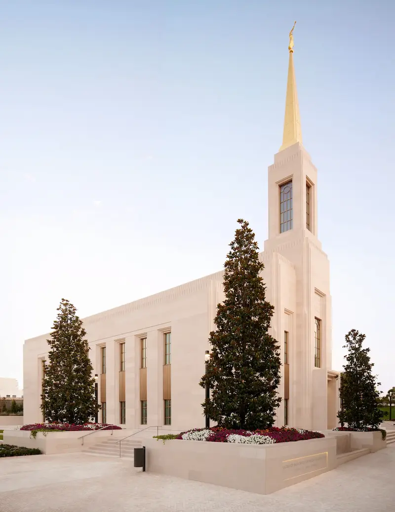

Temple Album
☰
Home
Old
New
Large
Small
Temples
My favorite Temples
Guatemala City Temple
Quetzaltenango Guatemala Temple
Coban Guatemala Temple

Lisbon Portugal Temple
Gilbert Arizona Temple
Mesa Arizona Temple
San Diego California Temple
Bogota Colombia Temple
Draper Utah Temple